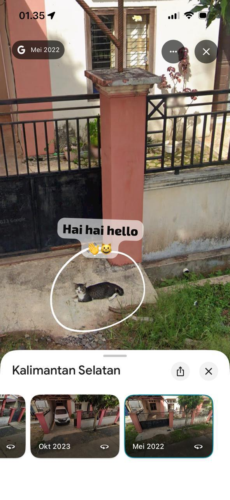

Khaila Nazila Shofa
klik
Loading...
Nama : Khaila Nazila Shofa
NIM : 2310715220012
Program Studi : Sosial Ekonomi Perikanan
Universitas : Lambung Mangkurat
Hobi : Masak bila mood sedang baik & Travelling jikalau isi dompet mendukung



Kelompok pengolah dan pemasar (POKLAHSAR) BUNGA MERAH adalah wadah pengolah dan pemasaran terasi udang yang berada di Desa Klampis Timur, Kecamatan Klampis Kabupaten Bangkalan yang di bentuk agar pengolah dan pemasar khusunya anggota kelompok dapat hidup sejahtera dan jauh dari kemiskinan. Potensi perikanan di Kecamatan Klampis sangat melimpah untuk dimanfaatkan dengan sebaik baiknya sebagai hasil olahan tentunya membutuhkan sebuah penanganan yang serius oleh pengolah itu sendiri dan juga harus didukung dan dibantu oleh semua pihak terutama pemerintah agar potensi yang sangat besar ini dapat bermanfaat bagi masyarakat.
Kelompok pengolah dan pemasar (POKLAHSAR) Ikan SRIKANDI adalah nama kelompok usaha pengolahan dan pemasaran yang bergerak di bidang pengolahan belut. Terbentuknya Pokhlahsar SRIKANDI ini merupakan kelompok Pohklahsar pertama di desa Puuhopa kecamatan Puriala. Ketersedian Belut di areal untuk kegiatan usaha di bidang Pokhlasar terutama belut. Sebagian besar masyarakatnya merupakan warga eks transmigrasi yang berasal dari Jawa Barat. Kegiatan Pokhlahsar ini masih dilakukan secara individual dan teknologinya masih tradisional maka keberadaan poklhasar ini mengalami pasang surut dan masih sebatas usaha untuk memenuhi kebutuhan sehari hari.
Kelompok pengolah dan pemasar (POKLAHSAR) SUMBER REJEKI merupakan wadah yang dibentuk untuk mengoptimalkan potensi sumber daya perikanan di Desa Ngelo, Kecamatan Margumulyo, Kabupaten Bojonegoro. Desa ini dikenal dengan kekayaan alamnya yang meliputi berbagai jenis ikan dan sumber daya perairan sepanjang daerah aliran Sungai Bengawan Solo yang mendukung masyarakat setempat untuk mengembangkan, mengolah, dan memasarkan hasil perikanan mereka.
Poklahsar WAROH adalah kelompok pengolah dan pemasar hasil perikanan di Desa Kediri Selatan. Beranggotakan ibu ibu yang ada di daerah tersebut dan didukung oleh tokoh masyarakat, perkumpulan ibu ibu ini ingin melakukan kegiatan yang bermanfaat dan bisa meningkatkan pendapatan dengan memanfaatkan keterampilan mengolah yang dimiliki. Tiap anggota kelompok berkumpul di satu tempat yaitu rumah ketua kelompok untuk memproduksi hasil olahan perikanan berupa abon ikan dan abon ikan asin. Poklahsar WAROH bermaksud menghimpun seluruh potensi yang memiliki persamaan cita cita, visi dan misi dalam upaya meningkatkan kesejahteraan khususnya kompetensi dalam olahan hasil perikanan. Poklahsar WAROH berfungsi sebagai wadah bagi setiap pelaku utama perikanan dalam meningkatkan keterampilan, ilmu pengetahuan dan teknologi melalui pelatihan pengolahan hasil perikanan.
Silakan tambahkan Data Dasar Kelompok di sini.
Silakan tambahkan Data Anggota Kelompok di sini.
Silakan tambahkan Data Komoditas Perikanan di sini.